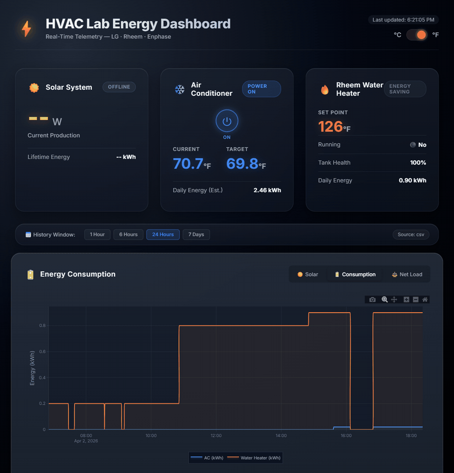
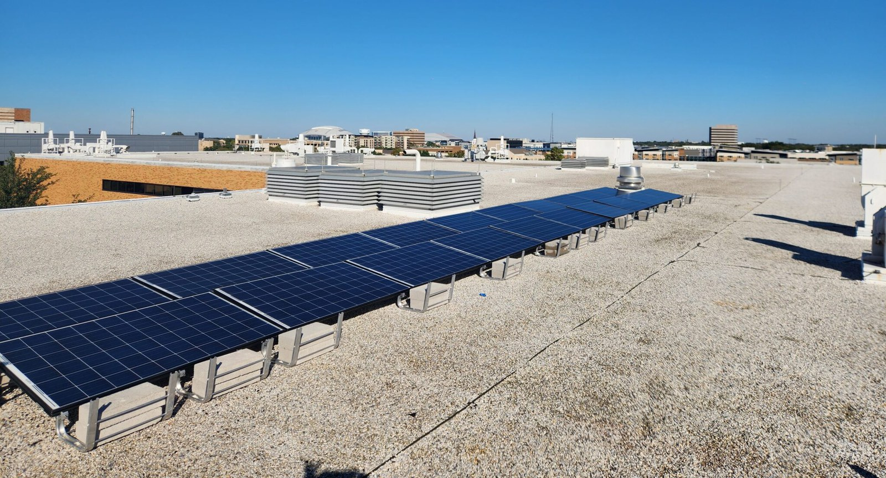

Lab Energy System: Production, Use and Control
The SEAR Lab turns its own rooftop solar, electricity use and weather into a live dataset that students collect, analyze and learn to control.
- Active
- 2023–present
- Lab energy system
- Solar
- Buildings
- Data

In plain English
How much of a small facility's electricity can its own solar panels supply, and where does the rest go? The SEAR Lab asks that question about itself. Students wrote Python code that pulls data from the online services behind the lab's rooftop solar microinverters and its smart circuit breakers, adds local weather, and turns the result into dashboards of energy produced and energy used. The work began as two separate efforts, rooftop solar analytics and a smart-breaker data center, which now form one project.
The same approach supports research. In a paper at the 2025 IISE Annual Conference, students Siddharth Shivaji Murkute and Abinash Bastola paired daily production from a residential solar array in Texas with weather records and built a regression model to separate normal weather swings from long-term panel wear. They estimated an average shortfall of about 0.55 percent, in line with manufacturers' typical 0.5 to 1 percent a year, while cautioning that the estimate carries model uncertainty. Next, the team is adding the lab's hot-water heater and air conditioner and preparing to move from monitoring to control.
Main points
- Python collectors pull daily and hourly data from the solar-monitoring and smart-breaker vendor APIs, plus weather for Arlington, Texas.
- The lab energy dashboard shows live and recorded readings from the lab's equipment, with a history view that can be read hour by hour.
- Smart-breaker readings show hour by hour which lab circuits draw power.
- A 2025 IISE conference paper used production and weather data to test whether solar panels lose output at the rate manufacturers state.
- The smart-breaker line is paused until new breakers are installed, and its code is kept as a worked example for the next team.

Papers, code and materials
- PaperMurkute & Bastola (2025), Measuring Microgrid Degradation: Collecting Meteorological and Microinverter Data, Proceedings of the IISE Annual Conference & Expo 2025
- RelatedHot-Water Heater and HVAC Data: the newest part of the lab energy system
People
- Erick C. Jones Jr., PhD, PEPrincipal Investigator · SEAR Lab directorin
- Siddharth Shivaji MurkutePaper author (2025); Lab Energy Technology Data Analytics (2024–25)
- Abinash BastolaPaper author (2025); BS Computer Science, UROP researcher (solar degradation prediction)in
- Vinay Kumar Shiva KumarLab Energy Technology Data Analytics (2024)
- Divi Teja KakaLab Energy Technology Data Analytics (2024)
- Lokesh Ram HariramLab Energy Technology Data Analytics (2025)
- Anushka PawarLab Energy Technology Data Analytics (2025)
- Gayathri Sri MuthuvelavanLab Energy Technology Data Analytics (2025)
- Fazle Huq Moinuddin KhanLab Energy Technology Data Analytics (2025)
- Ananthakrishnan SreekumarLab Energy Technology Data Analytics (2025)
- Hema Billemane Ashok KumarLab Energy Technology Data Analytics (2025)
- Zayaan Sharif ChowdhuryLab Energy Technology Data Analytics (2025)
Fall 2026 team: names to be added from the lab personnel sheet. Profiles marked in link to LinkedIn. More past and present lab members are on the SEAR Lab team page.